"It is an important and popular fact that things are not always as what they seem. For instance, on the planet earth, man has always assumed that he was more intelligent than dolphins because he had achieved so much: the wheel, New York, wars. [...] But conversely, the dolphins had always believed that they were far more intelligent than men; for precisely the same reasons."
"42. (The answer to life, the universe, and everything.)"
Douglas Adams (The hitchhiker's guide to the galaxy)
"Mathematics is less related to accounting than it is to philosophy."
Leonard Adleman (quoted in an article by Gina Kolata in the New York Times on 13 December 1994)
"If you don't like your analyst, see your local algebraist!"
Gert Almkvist (founder and director of The Institute for Algebraic Meditation)
"Combinatorics is not a science, it's an attitude."
"logloglog n has been proved to go to infinity, but has never been observed to do so."
"Anyone can count the seeds in an apple, but no one can count the apples in a seed."
Anonymous
"You can only be truly accomplished at something you love. Don't make money
the goal. Instead, pursue the things you love doing, and do them so well that
people can't take their eyes off you. All the other tangible rewards will come
as a result."
Maya Angleou
"Probable impossibilities are to be preferred to improbable possibilities."
Aristotle
"It is my experience that proofs involving matrices can be shortened by 50% if one throws the matrices out."
Emil Artin (Geometric Algebra, p. 14)
"Combinatorial analysis, in the trivial sense of manipulating binomial and multinomial coefficients, and formally expanding powers of infinite series by applications ad libitum and ad nauseamque of the multinomial theorem, represented the best that academic mathematics could do in the Germany of the late 18th century."
"If things are nice there is probably a good reason why they are nice: and if you do
not know at least one reason for this good fortune, then you still have work to do."
Richard Askey (Ramanujan and Important Formulas, p. 32, in Srinivasa
Ramanujan (1887-1920), a Tribute, K.R. Nagarajan and T. Soundarajan, eds.,
Madurai Kamaraj University, 1987)
"In the broad light of day mathematicians check their equations and their proofs, leaving no stone
unturned in their search for rigour. But, at night, under the full moon, they dream, they float
among the stars and wonder at the miracle of the heavens. They are inspired. Without dreams there
is no art, no mathematics, no life."
Michael Atiya (Notices of the AMS, 2010)
"Spending time with math people is a lot of fun. As a result of the play, I've had semi-drunken dinners with mathematicians all over the country. I recommend the experience."
David Auburn (playwright of Proof)
"Quapropter bono christiano, sive mathematici, sive quilibet impie divinantium, maxime dicentes vera, cavendi sunt,
ne consortio daemoniorum animam deceptam, pacto quodam societatis irretiant."
("Thus the good christian should beware of mathematicians and all those who make false prophecies, however much
they may in fact speak the truth; lest, being in league with the devil, they may deceive errant souls into making common cause.")
Augustinus (De genesis ad literam, Liber 2, Caput XVII, Nr. 37)
"Z is complicated."
Eric Babson (MSRI, 12/18/08)
"The irreducible price of learning is realizing that you do not know."
James Baldwin
"If a 'religion' is defined to be a system of ideas that contains unprovable statements, then Gödel taught us that mathematics is not only a religion, it is the only religion that can prove itself to be one."
John Barrow
"It takes a village to count integer points."
"Lattice points are like cockroaches, if you see one, you know there are a lot of others hiding around."
"This algorithm has been proved to work, but has never been observed to do so" (about the Monte Carlo Markov Chain method for approximate counting of contingency tables).
Alexander Barvinok (Joint Summer Research Conference, Snowbird, UT, 7/16/03, Illinois Mathematics Colloquium, 02/05, and Joint Summer Research Conference, Snowbird, UT, 6/15/06)
"One and one and one is three."
The Beatles (Come together)
"Obvious is the most dangerous word in mathematics."
E. T. Bell
"Mathematics is a collection of cheap tricks and dirty jokes."
Lipman Bers
"The origins of graph theory are humble, even frivolous."
N. Biggs, E. K. Lloyd, and R. J. Wilson (Graph Theory: 1736-1936)
"No WLAN [wi-fi]. Please just talk to each other and get drunk."
Blackboard outside a bar on Kollwitzstrasse, Berlin
"Life is the twofold internal movement of composition and decomposition at
once general and continuous."
Henri de Blainville (American Journal of the Medical Sciences,
1858)
"There are two versions of math in the lives of many Americans: the strange and boring subject that they encountered in classrooms and an interesting set of ideas that is the math of the world, and is curiously different and surprisingly engaging. Our task is to introduce this second version to today's students, get them excited about math, and prepare them for the future."
Jo Boaler (What's Math Got to Do with It?, Penguin 2008)
"5 out of 4 people have trouble with fractions."
Board in Danby, NY
"Suppose that you want to teach the 'cat' concept to a very young child. Do you explain that a cat is a relatively
small, primarily carnivorous mammal with retractible claws, a distinctive sonic output, etc.? I'll bet not. You
probably show the kid a lot of different cats, saying 'kitty' each time, until it gets the idea. To put it more
generally, generalizations are best made by abstraction from experience."
R. P. Boas (Can we make mathematics inelligible?, American Mathematical Monthly 88 (1981), pp. 727-731)
"We all agree that your theory is crazy, but is it crazy enough?"
Niels Bohr (1885-1962)
"My special pleasure in mathematics rested particularly on its purely speculative part."
Bernhard Bolzano (1781-1848)
"Mathematics as we know it and as it has come to shape modern science could never have come into being without some disregard for the dangers of the infinite."
David Bressoud (A radical approach to real analysis, MAA, 2007, p. 22)
"There are no problems, just pauses between ideas."
The Brotherhood of the Rose
"There are three kinds of people: those who can count and those who can't."
Bumpersticker on a car in Ithaca, NY
"Abstraction consists essentially in the creation and utilization of ambiguity."
"Logic moves in one direction, the direction of clarity, coherence and structure. Ambiguity moves in the other direction, that of fluidity, openness, and release. Mathematics moves back and forth between these two poles. [...] It is the interaction between these different aspects that gives mathematics its power."
William Byers (How Mathematicians Think, Princeton University Press, 2007)
"Too many people are thinking of security instead of opportunity. They seem more afraid of life than death."
James F. Byrnes
"Sometimes I think the surest sign that intelligent life exists elsewhere in the
universe is that none of it has tried to contact us."
Calvin (Bill
Watterson's Calvin & Hobbes)
"The essence of mathematics resides in its freedom."
"To ask the right question is harder than to answer it."
Georg Cantor
"Alice laughed: 'There's no use trying,' she said; 'one can't believe impossible things.'
'I daresay you haven't had much practice,' said the Queen. 'When I was younger, I always did it for
half an hour a day. Why, sometimes I've believed as many as six impossible things before breakfast.' "
"Where shall I begin" he asked. "Begin at the beginning", the king said, "and stop when you get to an end."
"And what is the use of a book," thought Alice, "without pictures or conversations?"
Lewis Carroll (Alice in Wonderland)
"The peculiar interest of magic squares and all lusus numerorum in general lies in
the fact that they possess the charm of mystery. They appear to betray some hidden
intelligence which by a preconceived plan produces the impression of intentional design,
a phenomenon which finds its close analogue in nature."
Paul Carus (in W. S. Andrews, Magic Squares and Cubes, 1960)
"First, it is necessary to study the facts, to multiply the number of observations, and then later to search for
formulas that connect them so as thus to discern the particular laws governing a certain class of phenomena.
In general, it is not until after these particular laws have been established that one can expect to discover
and articulate the more general laws that complete theories by bringing a multitude of apparently very diverse
phenomena together under a single governing principle."
Augustin Louis Cauchy (1789-1857)
"To make a great dream come true, the first requirement is a great capacity to dream; the second is persistence."
Cesar Chavez
"I'm a mathematical optimist: I deal only with positive integers."
"The hardest thing being with a mathematician is that they always have problems."
Tendai Chitewere
"Everyone engaged in research must have had the experience of working with
feverish and prolonged intensity to write a paper which no one else will
read or to solve a problem which no one else thinks important and which
will bring no conceivable reward -- which may only confirm a general
opinion that the researcher is wasting his time on irrelevancies."
Noam Chomsky (A Review of B. F. Skinner's Verbal Behavior, Language, 35, No. 1 (1959), 26-58)
"A pessimist sees the difficulty in every opportunity; an optimist sees the opportunity in every difficulty."
"I saw, as one might see the transit of Venus, a quantity passing through infinity and changing its sign
from plus to minus. I saw exactly how it happened... but it was after dinner and I let it go."
Winston Churchill (My early life, 1930)
"11:15 Restate my assumptions:
1. Mathematics is the language of nature.
2. Everything around us can be represented and understood through numbers.
3. If you graph these numbers, patterns emerge. Therefore: There are patterns everywhere in nature."
Max Cohen (played by Sean Gullette, in Pi, a film by Darren Aronofsky)
"To many, mathematics is a collection of theorems. For me, mathematics is a collection of examples; a theorem is a statement about a collection of examples and the purpose of proving theorems is to classify and explain the examples..."
John B. Conway (Subnormal Operators, Pitman Advanced Publishing Program, 1981)
"I hate algebra."
John H. Conway (Invited AMS address, Toronto, 9/23/00)
"I have photographed many people: artists, writers, and scientists, among others. In speaking about their work, mathematicians use the words 'elegance', 'truth', and 'beauty' more than everyone else combined."
Mariana Cook (in the preface of her book Mathematicians: An Outer View of the Inner World with Clifford Gunning, Princeton University Press, 2009).
"The mathematical phenomenon always develops out of simple arithmetic, so useful in everyday
life, out of numbers, those weapons of the gods: the gods are there, behind the wall, at play
with numbers."
Le Corbusier
"A mathematician is a blind man in a dark room looking for a black cat which isn't there."
Charles R. Darwin
"Je serais reconnaissant a toute personne ayant compris cette demonstration de me l'expliquer."
"From [Grothendieck], I have also learned not to take glory in the difficulty of a proof: difficulty means we have not understood. The idea is to be able to paint a
landscape in which the proof is obvious."
Pierre Deligne (Theorie des topos et cohomologie etale des schemas, Tome 3, p. 584, and Notices of the AMS 63 (2016), p. 250)
"Zaslavsky's theorem is a gift that keeps on giving." Emanuele Delucchi (Combinatorial and Algebraic Aspects on Lattice Polytopes, Kwansei Gakuin University, February 2023)
"Mathematicians care no more for logic than logicians for mathematics."
Augustus De Morgan
"I certainly do care about measuring educational results. But what is an 'educational result?' The twinkling eyes of my students, together with their heartfelt and beautifully expressed mathematical arguments are all the results I need."
Keith Devlin
"The grand thing is to be able to reason backwards."
Arthur Conan Doyle (A study in scarlet)
"A lot of mathematicians are a little bit strange in one way or another. It goes with creativity."
Peter Duren (NYT, 5/26/96 , p.23)
"Suppose that we think of the integers lined up like dominoes. The inductive step tells us that they are close enough for each domino to knock over the next one, the base case tells us that the first domino falls over, the conclusion is that they all fall over. The fault in this analogy is that it takes time for each domino to fall and so a domino which is a long way along the line won't fall over for a long time. Mathematical implication is outside time."
Peter J. Eccles (An Introduction to Mathematical Reasoning, p. 41)
"I have not failed. I've just found 10,000 ways that won't work."
Thomas Alva Edison (1847-1931)
"The most beautiful experience is the mysterious. It is the source of true art and science."
"Everything should be made as simple as possible, but not simpler."
"Pure mathematics is, in its way, the poetry of logical ideas."
"Not everything that can be counted counts, and not everything that counts can be counted."
"Do not worry too much about your difficulties in mathematics, I can assure you that mine are still greater."
"I never think of the future--it comes soon enough."
"Imagination is more important than knowledge."
"It's not that I'm so smart. It's just that I spent more time on problems."
"Insofern sich die Sätze der Mathematik auf die Wirklichkeit beziehen, sind sie nicht sicher, und insofern sie sicher sind, beziehen sie sich nicht auf die Wirklichkeit."
"Wenn ein gewisses technisches Können erreicht ist, verschmelzen Wissenschaft und Kunst gern zur Ästhetik. Die grossen Wissenschaftler sind auch immer Künstler."
Albert Einstein (1879-1955)
"The secret to education is respecting the pupil."
Ralph Waldo Emerson
"The macro is fucked. We gotta go micro."
Susie Essman (in an interview with Andy Borowitz, November 2024)
"Analysis is the art of taming infinity."
Neil Falkner (Amer. Math. Monthly 116 (2009), p. 658)
"Education's purpose is to replace an empty mind with an open one."
Malcolm Forbes
"Spoon feeding, in the long run teaches us nothing but the shape of the spoon."
E. M. Forster
"Mathematics compares the most diverse phenomena and discovers the secret analogies that unite them."
Jean Baptiste Joseph Fourier (1768-1830)
"In 1906, it was estimated that one in eight Americans bought a postcard every day."
John Freeman (The Tyranny of E-mail, p. 46; the book is quite good otherwise)
"When I am working on a problem I never think about beauty. I only think about how to solve
the problem. But when I have finished, if the solution is not beautiful, I know it is wrong."
"Everything you've learned in school as 'obvious' becomes less
and less obvious as you begin to study the universe. For
example, there are no solids in the universe. There's not even
a suggestion of a solid. There are no absolute continuums.
There are no surfaces. There are no straight lines."
Buckminster Fuller (1895-1983)
"When people tell you something's wrong or doesn't work for them, they are almost always right.
When they tell you exactly what they think is wrong and how to fix it, they are almost always
wrong."
Neil Gaiman
"Philosophy is written in this grand book--I mean the universe--which stands continually open to our gaze,
but it cannot be understood unless one first learns to comprehend the language and interpret the characters
in which it is written. It is written in the language of mathematics, and its characters are triangles,
circles, and other geometric figures, without which it is humanly impossible to understand a single word of it."
Galileo Galilei (Il Saggiatore, 1623)
"When I give this talk to a physics audience, I remove the quotes from my 'Theorem'."
Brian Greene (invited talk at Joint Math Meetings, Washington, DC, Jan. 19, 2000)
"For the delay in preparing this article the authors apologize to their readers and to each other."
Curtis Greene & Tom Zaslavsky (Transactions of the AMS 280 (1983), 97-126).
"The fact that we're humans is really pretty limiting. I mean, we didn't evolve to
understand the structure of the space-time continuum or do things in 100,000 dimensions. We
know how to stay out of the rain and keep [from] getting eaten by animals."
Ron Graham
"Bart: Hey, Houdini! Why don't you saw Martin in half?
Magician: Oh, I'm not the kind of magician who does tricks. I'm a mathemagician!
[Kids groan]
Magician: Now, prepare to marvel at the mysteries of the universe, as I make this remainder disappear. [writes 7 goes into 28 three times]
Lisa: But 7 goes into 28 four times.
Magician: Uh, this is a magic 7."
"Apu: In fact I can recite pi to 40000 places. The last digit is one!
Homer: Mmmm, pie."
"Homer: This time tomorrow, you'll be wearing high heels!
Ned: Nope, you will.
Homer: 'Fraid not.
Ned: 'Fraid so!
Homer: 'Fraid not.
Ned: 'Fraid so!
Homer: 'Fraid not infinity!
Ned: 'Fraid so infinity plus one!
Homer: D'oh!"
"Internet Guy: Your stock is at zero.
Bart: But I have 52 million shares! What's 52 million times zero?! And don't tell me it's zero!"
"(Homer has disappeared into a wall in the living room.)
Lisa: Well, where's my dad?
Frink: Well, it should be obvious to even the most dimwitted individual who holds an advanced degree in hyperbolic topology, n'gee, that Homer Simpson has stumbled into...[the lights go off] the third dimension.
Lisa: [flips the light switch back] Sorry.
Frink: [drawing on a blackboard] Here is an ordinary square....
Wiggum: Whoa, whoa--slow down, egghead!
Frink: ... but suppose we extend the square beyond the two dimensions of our universe, along the hypothetical z-axis, there.
Everyone: [gasps]
Frink: This forms a three-dimensional object known as a "cube," or a "Frinkahedron" in honor of its discoverer, n'hey, n'hey.
Homer's voice: Help me! Are you helping me, or are you going on and on?
Frink: Oh, right. And, of course, within, we find the doomed individual."
Matt Groening
"The shortest route between two truths in the real domain passes through the complex domain."
Jacques Salomon Hadamard (1865-1963)
"The only way to learn mathematics is to do mathematics."
"A good stock of examples, as large as possible, is indispensable for a thorough understanding of any concept, and when I want to learn something new, I make it my first job to build one."
Paul Halmos
"Have you ever observed that we pay much more attention to a wise passage when it is quoted than when we read it in the original author?"
Philip G. Hamerton
"The purpose of computation is insight, not numbers."
"There is a pretty good correlation between those who work with the doors open and those who
ultimately do important things, although people who work with doors closed often work harder."
[from this talk]
Richard Hamming (1915--1998)
"Inspiration is constantly in the air. It's up to us to develop the sensitivity to pick up on it."
Herbie Hancock
"One good thing about teaching calculus is that you develop a hardened attitude towards repeating yourself."
Phil Hanlon
"I believe that mathematical reality lies outside us, that our function is to discover or observe it, and that the theorems which we prove, and which we describe grandiloquently as our 'creations,' are simply the notes of our observations."
"The mathematician's patterns, like those of the painter's or the poet's, must be beautiful; the ideas, like the colours or the words, must fit together in a harmonious way."
Godfrey Harold Hardy
"The student of mathematics has to develop a tolerance for ambiguity. Pedantry can be the enemy of insight."
Gila Hanna (in David Tall (ed.), Advanced mathematical thinking)
"The whole purpose of education is to turn mirrors into windows."
Sydney J. Harris
"One of the big misapprehensions about mathematics that we perpetrate in our classrooms is that the
teacher always seems to know the answer to any problem that is discussed. This gives students the
idea that there is a book somewhere with all the right answers to all of the interesting questions, and
that teachers know those answers. And if one could get hold of the book, one would have everything
settled. That's so unlike the true nature of mathematics."
Leon Henkin
"I believe that numbers and functions of Analysis are not the arbitrary result of our minds; I think that they exist outside of us, with the same character of necessity as the things of objective reality, and we meet them or discover them, and study them, as do the physicists, the chemists and the zoologists."
Charles Hermite (quoted in Morris Kline's Mathematical Thought from Ancient to Modern Times, Oxford University Press, 1972, p. 1035)
"I wrote a few papers on Koszul algebras, but I really don't understand the definition of Koszul algebras."
Takayuki Hibi (Joint Summer Research Conference, Snowbird, UT, June 15, 2006)
"Mathematics is for lazy people."
Peter Hilton (Invited address, Hudson River Undergraduate Conference 2000)
"Die mathematische Forschung besteht aus 10% Intuition und 90% Arbeit."
Edmund Hlawka (DMV-Mitteilungen 2/99)
"Once you eliminate the impossible, whatever remains, no matter how improbable, must be the truth."
"'Data! Data! Data!' he cried, impatiently. 'I can't make bricks without clay'."
Sherlock Holmes (by Sir Arthur Conan Doyle, 1859-1930)
"No education is politically neutral."
bell hooks (Teaching to Transgress, 1994)
"Good judgement comes from experience. Experience comes from bad judgement."
Jim Horning
"Here we will outline what is involved in the computations and list our answers. The details are available from the author on request. The author does hope someone will check the calculations, because he does not have a great deal of faith in his ability to carry through the details in a fault-free manner. He hopes however that the answers are qualitatively correct as stated."
Roger Howe (Proc. Indian Acad. Sci. Math. Sci. 97 (1987), pp. 85-109)
"I do not believe in [writer's block]. My job is to write, not to like what I'm writing. That's why we edit, and nobody gets editor's block."
Jason Isbell
"For a list of all the ways technology has failed to improve the quality of life, please press three."
Alice Kahn
"Counting pairs is the oldest trick in combinatorics... Every time we count pairs, we learn something from it."
Gil Kalai
"Mathematics is an activity governed by the same rules imposed upon the symphonies of Beethoven, the paintings of DaVinci, and the poetry of Homer."
Edward Kasner and James Newman (Mathematics and the Imagination, Simon & Schuster, New York, 1940, p. 362)
"Ubi materia, ibi geometria."
"Geometry is the archetype of the beauty of the world."
Johannes Kepler (1571-1630)
"If you had done something twice, you are likely to do it again."
Brian Kernighan and Bob Pike (The Unix Programming Environment, p. 97)
"Mathematics is, in many ways, the most precious response that the human spirit has made to the call of the infinite."
Cassius J. Keyser (The Human Worth of Rigorous Thinking: Essays and Addresses, Columbia University Press, New York, 1925, p. 59.)
"A good talk contains no proofs; a great talk contains no theorems."
"Mathematical proofs should only be communicated in private and to consenting adults."
Victor Klee
"The worst thing you can do to a problem is solve it completely."
"If you're using the same notation for everything, you're never wrong."
Daniel Kleitman
"Science is what we understand well enough to explain to a computer, Art is all the rest."
"I have been a happy man ever since January 1, 1990, when I no longer had an email address. I'd used email since about 1975, and it seems to me that 15 years of email is plenty for one lifetime."
"Email is a wonderful
thing for people whose role in life is to be on top of things. But not for me; my role is
to be on the bottom of things."
Donald E. Knuth
"In L_infinity there is a lot of room for shortest vectors."
"Fix N, say, some small number. [Writes N = 300000 on the board]"
Matthias Köppe (AIM 11/10/10 & 11/11/16)
"The greatest reward for a student is not a good grade. It is the willingness of his teacher to listen to him."
Nikolay Konstantinov
"Nein! Wir Sind Dichter."
"Die ganzen Zahlen hat der liebe Gott geschaffen, alles andere ist Menschenwerk."
"Number theorists are like lotus-eaters--having tasted this food they can never give it up."
Leopold Kronecker (1823-1891)
"The imaginary number is a fine and wonderful resource of the human spirit, almost an amphibian between being and not being."
"Music is the pleasure the human mind experiences from counting without being aware that it is counting."
Gottfried Wilhelm Leibniz (1646-1716)
"Every dimension is special."
Jeff Lagarias (Joint Summer Research Conference, Snowbird, UT, 7/13/03)
"Nature laughs at the difficulties of integration."
Pierre-Simon de Laplace
"I don't know where my ideas come from. I will admit, however, that one key ingredient is caffeine. I get a couple cups of coffee into me and weird things just start to happen."
Gary Larson (The Prehistory of The Far Side)
"Music is part of Number Theory. Nowadays when a number-theorist applies for a grant, he says that it is good for security, but in those days, way before America, he would say that it's good for music. I will not comment whether we have progressed..."
"Recreational number theory [...] is that part of number theory that is too difficult to study."
"A math lecture without a proof is like a movie without a love scene. [pauses] This talk has two proofs."
Hendrik Lenstra (Joint Math Meetings Jan. 2002)
"Es ist unglaublich, wie unwissend die studirende Jugend auf Universitäten kommt, wenn ich nur 10 Minuten rechne oder geometrisire, so schläft 1/4 derselben sanfft ein."
"Ich glaube, dass es, im strengsten Verstand, für den Menschen nur eine einzige Wissenschaft gibt, und diese ist reine Mathematik. Hierzu bedürfen wir nichts weiter als unseren Geist."
"Die Mathematik ist eine gar herrliche Wissenschaft, aber die Mathematiker taugen oft den Henker nicht. Es ist fast mit der Mathematik wie mit der Theologie. So wie die letzteren Beflisenen, zumal wenn sie in Ämtern stehen, Anspruch auf einen besonderen Kredit von Heiligkeit und eine nähere Verwandtschaft mit Gott machen, obgleich sehr viele darunter wahre Taugenichtse sind, so verlangt sehr oft der so genannte Mathematiker für einen tiefen Denker gehalten zu werden, ob es gleich darunter die grössten Plunderköpfe gibt, die man finden kann, untauglich zu irgend einem Geschäft, das Nachdenken erfordert, wenn es nicht unmittelbar durch jene leichte Verbindung von Zeichen geschehen kann, die mehr das Werk der Routine, als des Denkens sind."
Georg Christoph Lichtenberg (1742-1799)
"A heavy warning used to be given that pictures are not rigorous; this has never had its bluff called and has permanently frightened its victims into playing for safety."
John Edensor Littlewood (1885-1977)
"There is nothing as dreamy and poetic, nothing as radical, subversive, and psychedelic, as mathematics. It is every bit as mind blowing as cosmology or physics (mathematicians conceived of black holes long before astronomers actually found any), and allows more freedom of expression than poetry, art, or music (which depends heavily on properties of the physical universe). Mathematics is the purest of the arts, as well as the most misunderstood."
Paul Lockhart (A mathematician's lament)
"You start out in life doing mathematics, you end up doing combinatorics."
"If you have a mathematical problem, there are four things you can do:
1. Ignore it. If you can’t:
2. Prove it. If you can’t:
3. Disprove it. Finally if you can’t do that either:
4. Generalise it."
Ian G. Macdonald (as quoted in these memories by Gert Heckman, Tom Koornwinder and Eric Opdam)
"Education is the most powerful weapon which you can use to change the world."
Nelson Mandela
"Der geistige Mensch hat die Wahl (soweit er die Wahl hat), entweder Ironiker oder Radikalist zu sein; ein Drittes ist anständigerweise nicht möglich."
Thomas Mann
"Math is the only place where truth and beauty mean the same thing."
Danica McKellar
"For every problem, there is one solution which is simple, neat, and wrong."
H. L. Mencken (1880-1956)
"The [...] thing we evolutionary biologists don't do enough of [...] is make an emotional and moral case for the study of evolution. Last night, I concluded my talk with a quote from Dover, PA creationist school board member William Buckingham, who declared, 'Two thousand years ago someone died on a cross. Can't someone take a stand for him?' My response was, 'In the last two minutes, someone died from a bacterial infection. We take a stand for him.'"
Mike the Mad Biologist
"Mathematical study and research are very suggestive of mountaineering. Whymper made several efforts before he
climbed the Matterhorn in the 1860's and even then it cost the life of four of his party. Now, however, any tourist can be
hauled up for a small cost, and perhaps does not appreciate the difficulty of the original ascent. So in mathematics, it
may be found hard to realise the great initial difficulty of making a little step which now seems so natural and obvious,
and it may not be surprising if such a step has been found and lost again."
Louis Joel Mordell (1888-1972; Three Lectures on Fermat's Last Theorem, p.4)
"But as Nature is the best guide, teaching must be the development of natural inclinations, for which purpose the teacher must watch his pupil and listen to him, not continually bawl words into his ears as if pouring water into a funnel. Good teaching will come from a mind well made rather than well filled."
Michel de Montaigne (On Educating Children, 1588)
"Young bloods can't spell but they can rock you in PlayStation this new math it whippin m&8%!2@*^#ers ass you wanna know how to rhyme you better learn how to add it's mathematics."
Mos Def (Mathematics)
"Sometimes a good idea comes to you when you are not looking for it. Through
an improbable combination of coincidence, naivete and lucky mistakes ..."
Kary Mullis (The Unusual Origin of the Polymerase Chain Reaction, Sci. Amer., April 1990, p. 445)
"The world is continuous, but the mind is discrete."
David Mumford (ICM 2002 plenary talk, Aug. 21, 2002).
"In mathematics you don't understand things. You just get used to them."
"If people do not believe that mathematics is simple, it is only because they do not realize how complicated life is."
John von Neumann (1903-1957)
"Everyone else would climb a peak by looking for a path somewhere in the mountain. Nash would climb another
mountain altogether and from that distant peak would shine a searchlight back onto the first peak."
Donald Newman (1930-2007) (quoted in A Beautiful Mind by S. Nasar, p. 12)
"If I have been able to see further, it was only because I stood on the shoulders of giants."
"Truth is ever to be found in the simplicity, and not in the multiplicity and confusion of things."
"I seem to have been only like a boy playing on the seashore, and diverting myself in now and then finding a smoother pebble or a prettier shell than ordinary, whilst the great ocean of truth lay all undiscovered before me."
Isaac Newton (1643-1727)
"Critique the effectiveness of your lesson, not by what answers students give, but by what questions they ask."
Fawn Nguyen
"And those who were seen dancing were thought to be insane by those who could not hear the music."
Friedrich Nietzsche (1844-1900)
"Contradiction is not a sign of falsity, nor the lack of contradiction a sign of truth."
"It is not certain that everything is uncertain."
"To speak freely of mathematics, I find it the highest exercise of the spirit; but at the same time I know that it is so useless that I make little distinction between a man who is only a mathematician and a common artisan. Also, I call it the most beautiful profession in the world; but it is only a profession."
"We are usually convinced more easily by reasons we have found ourselves than by those which occurred to others."
Blaise Pascal
"This isn't right, this isn't even wrong."
Wolfgang Pauli (1900-1958), upon reading a young physicist's paper
"Do unto others 20% better than you would expect them to do unto you, to correct for
subjective error."
Linus Pauling
"Mathematicians are a bit like the laconic Vermonter who, when asked if he's lived in the state his whole life, replies, "Not yet."
"The simple equations that generate the convoluted Mandelbrot fractal have been called the wittiest remarks ever made."
John Allen Paulos (Irreligion, p. xii, and Once Upon a Number, p. 130-131)
"Leo, do you have a religion? You know, a religion, like Jewish, or Christian, or Mathematics...?"
Alon Peres, 6-year old son of Yuval Peres (as quoted in Amer. Math. Monthly 110, p. 324)
"Computers are useless. They can only give you answers."
Pablo Picasso
"Let no-one ignorant of geometry enter."
Inscription at the door of Plato's academy
"Mathematics is the art of giving the same name to different things."
"One geometry cannot be more true than another; it can only be more convenient."
"Thought is only a flash between two long nights, but this flash is everything."
"Science is facts; just as houses are made of stones, so is science
made of facts; but a pile of stones is not a house and a collection of
facts is not necessarily science."
Jules Henri Poincare (1854-1912)
"Geometry is the science of correct reasoning on incorrect figures."
"Hilbert once had a student in mathematics who stopped coming to his lectures, and he was finally told that the young man had gone off to become a poet. Hilbert is reported to have remarked, 'I never thought he had enough imagination to be a mathematician'."
George Polya (1887-1985)
"Theorems are fun especially when you are the prover, but then the pleasure fades.
What keeps us going are the unsolved problems."
Carl Pomerance (MAA invited talk, 1/21/2000)
"Where a calculator like the ENIAC today is equipped with 18,000 vacuum tubes
and weighs 30 tons, computers in the future may have only 1,000 vacuum tubes
and perhaps weigh only 1 1/2 tons."
Popular Mechanics, March 1949, p. 258
"MacPherson told me that my theorem can be viewed as blah blah blah Grothendick blah blah blah, which makes it much more respectable."
"I think some intuition leaks out in every step of an induction proof."
Jim Propp (talk at AMS special session, 1/22/00)
"Cambridge gave me various kinds of teaching and
supervision, but possibly the most important influences were Jeffrey
Goldstone and Peter Swinnerton-Dyer, who encouraged me to continue to
think for myself and not to take the technical details too seriously."
Miles Reid (in his pre-mortal obituary)
"Mathematics is persistent intellectual honesty."
Moses Richardson (Mathematics and intellectual honesty, Amer. Math. Monthly 59 (1952), p. 73)
"It is a pain to think about convergence but sometimes you really have to."
Sinai Robins (colloquium SUNY Binghamton 3/14/02)
"I like to think of mathematicians as forming a nation of our own without distinctions of geographical origin, race, creed, sex, age or even time... all dedicated to the most beautiful of the arts and sciences."
Julia Robinson
"God created infinity, and man, unable to understand infinity, created finite sets."
"If we have no idea why a statement is true, we can still prove it by induction."
"Nature imitates mathematics."
"Every field has its taboos. In algebraic geometry the taboos are
(1) writing a draft that can be followed by anyone but two or three of one's closest friends,
(2) claiming that a result has applications,
(3) mentioning the word 'combinatorial,' and
(4) claiming that algebraic geometry existed before Grothendieck (only some handwaving references to 'the Italians' are allowed provided they are not supported by specific references)."
"There is something in statistics that makes it very similar to astrology."
"Soon after that reading [of Berge's combinatorics book], I would be one of many who unknotted themselves from the tentacles of the Continuum and joined the
then Rebel Army of the Discrete." [foreword to Berge's book]
Gian-Carlo Rota
"It is because modern education is so seldom inspired by a great hope that it so seldom achieves a great result. The wish to preserve the past rather than the hope of creating the future dominates the minds of those who control the teaching of the youth."
"In all affairs it's a healthy thing now and then to hang a question mark on the things you have long taken for granted."
Bertrand Russell
"We haven't the money, so we have to think."
Ernst Rutherford
"If you want to build a ship, don't drum up people to collect wood and don't assign them tasks and work, but rather teach them to long for the endless immensity of the sea."
"Grown-ups never understand anything for themselves, and it is tiresome for children to be always and forever explaining things to them."
Antoine de Saint-Exupery
"All truth passes through three stages. First, it is ridiculed. Second, it is violently opposed. Third, it is accepted as being self-evident."
"Dass die niedrigste aller Tätigkeiten die arithmetische ist, wird dadurch belegt, dass sie die einzige ist, die auch durch eine Maschine ausgeführt werden kann. Nun läuft aber alle analysis finitorum et infinitorum im Grunde doch auf Rechnerei zurück. Danach bemesse man den 'mathematischen Tiefsinn'."
Arthur Schopenhauer (1788-1860)
"The problem is that we tend to live among the set of puny integers and generally ignore the vast infinitude of larger ones. How trite and limiting our view!"
P. D. Schumer (Mathematical Journeys, Wiley, 2004)
"A felicitous but unproved conjecture may be of much more consequence for mathematics than the proof of many a respectable theorem."
A. Selberg (Collected papers, vol. I (1989), p. 700)
"It strikes me that mathematical writing is similar to using a language. To be understood you have to follow some grammatical rules. However, in our case, nobody has taken the trouble of writing down the grammar; we get it as a baby does from parents, by imitation of others. Some mathematicians have a good ear; some not (and some prefer the slangy expressions such as 'iff'). That's life."
Jean-Pierre Serre
(see also his lecture
on how to write mathematics badly)
"We learned to be happy.
We danced 'round the hall.
And learning to count was the key to it all."
Sesamestreet
"We've taught you that the earth is round,
That red and white make pink,
And something else that matters more --
We've taught you how to think."
Dr. Seuss (Hooray for Diffendoofer Day)
"Though this be madness, yet there is method in it."
"Waste not thy time in windy argument but let the matter drop."
W. Shakespeare
"log log log x goes to infinity with great dignity."
Dan Shanks (Math. Comp. 13 (1959), 272-284)
"He [Taniyama] was gifted with the special capability of making many mistakes, mostly in the right direction. I envied
him for this and tried to imitate him, but found it quite difficult to make good mistakes."
Goro Shimura (Nova program on FLT and Fermat's Enigma by Simon Singh, p. 174)
"Serious numbers will speak to us always."
Paul Simon (When numbers get serious, 1983)
"In theory, there is no difference between theory and practice. But, in practice, there is."
Jan L.A. van de Snepscheut
"The very term 'combinatorial methods' has an oxymoronic character."
Joel Spencer (Handbook of Combinatorics, p. 1807)
"Mathematicians like to pretend that they can't even add, but most of them can
when they have to."
Michael Spivak
(Calculus, p. 179)
"Mathematics is the science of patterns, and nature exploits just about every pattern that there is."
Ian Stewart (Nature's Numbers: The Unreal Reality of Mathematical Imagination, Basic Books, New York, 1995, p. 18)
"If you think it's simple, then you have misunderstood the problem."
Bjarne Strustrup (lecture at Temple U., 11/25/97)
"The only reason that we like complex numbers is that we don't like real numbers."
Bernd Sturmfels (IAS/Park City Mathematics Institute, 7/14/04)
"We value what we measure because we do not know how to measure what we really value."
Richard Tapia (Encouraging minority students to pursue careers in science, technology, engineering and math, Briefing to the U.S. Commission on Civil Rights, 9/12/08)
"The purely formal language of geometry describes adequately the reality of space. We might say, in this sense, that geometry is successful magic. I should like to state a converse: is not all magic, to the extent that it is successful, geometry?"
Rene Thom (Structural Stability and Morphogenesis, W. A. Benjamin, Reading, MA, 1975, p. 11)
"Get your facts first, and then you can distort them as much as you please."
"Few things are harder to put up with than a good example."
"Twenty years from now you will be more disappointed by the things you
didn't do than by the ones you did do. So throw off the bowlines, sail away
from the safe harbour, catch the trade winds in your sails. Explore. Dream.
Discover."
Mark Twain (1835-1910)
"A beautiful problem is like a funny joke."
Daniel Ullman (Amer. Math. Monthly 105 (1998), p. 292)
"A beautiful problem is no joke!"
Marvin Knopp (corrections on my thesis, April 2000)
"Mathematics is an escape from reality."
Stanislaw Ulam (Adventures of a Mathematician, UC Press, Berkeley, 1991, p. 120)
"Phyllis explained to him, trying to give of her deeper self, 'Don't you find it so beautiful, math? Like an endless sheet of gold chains, each link locked into the one before it, the theorems and functions, one thing making the next inevitable. It's music, hanging there in the middle of space, meaning nothing but itself, and so moving...'"
"'What my brain doesn't quite get,' Owen persisted, elevating himself to Cantor's class of mental fragility, 'is why it was such a big deal when Russell and Gödel found these internal contradictions or paradoxes--as Klein points out, the confusion is basically semantic. I don't see what undecidability has to do with the history of the computer.' 'I mean,' he said, ' so what if there exists a set of sets that are not members of themselves, which makes it a set that both is and isn't a member of itself?' 'But Owen, dear,' Phyllis said, 'the antinomies--the paradoxes--undermine classical logic, but the way they have to be phrased brings us to symbolic logic, which brings in Boolean math and the Turing machine and algorithms. Undecidability is like knowing you have a swamp and having to invent methods to build on it anyway. It's like the Back Bay on all its pilings,' she said..."
John Updike (Village, Alfred A. Knopf, New York, 2004, pp. 93-96)
"A lack of seriousness has led to all sorts of wonderful insights."
Kurt Vonnegut
"A mathematician who is not also something of a poet will never be a complete mathematician."
Karl Weierstrass
"Every mathematician worthy of the name has experienced, if only rarely, the state of lucid
exaltation in which one thought succeeds another as if miraculously, and in which the unconscious
(however one interprets that word) seems to play a role."
"Gott existiert, weil die Mathematik widerspruchsfrei ist, und der Teufel existiert, weil wir das nicht beweisen können."
Andre Weil
"That's all well and good in practice, but how does it work in theory?"
Shmuel Weinberger (MSRI, 9/5/06)
"My work always tried to unite the true with the beautiful, but when I had to choose one or the other, I usually chose the beautiful."
Hermann Weyl
"We think in generalities, but we live in details."
"The pursuit of mathematics is a divine madness of the human spirit."
"Fundamental progress has to do with the reinterpretation of basic ideas."
"Order is not sufficient. What is required, is something much more complex. It is order entering upon novelty; so that the massiveness of order does not degenerate into mere repetition; and so that the novelty is always reflected upon a background of system."
Alfred North Whitehead
"Life is too important to be taken seriously."
Oscar Wilde
"I never use a computer."
Andrew Wiles (Nova program on FLT and Fermat's Enigma by Simon Singh, p. 211)
"A generating function is a clothesline on which we hang up a sequence of numbers for display."
"The full beauty of the subject of generating functions emerges only from tuning in on both channels: the discrete and the continuous."
"Induction makes you feel guilty for getting something out of nothing, and it is artificial, but it is one of the greatest
ideas of civilization."
"Despite the saying that 'for every epsilon there is a delta,' (which is really rather romantic, when you think about it) I often could not get my epsilons paired off with suitable deltas."
Herbert Wilf (the last quote is from Epsilon sandwiches which
contains a few more gems)
"1/r^2 has a nasty singularity at r=0, but it did not bother Newton--the Moon is far enough."
Edward Witten (AMS Gibbs Lecture, Baltimore, Jan. 7, 1998)
"All means (even continuous) sanctify the discrete end." (email on Wed, 14 Aug 2002 16:29:35 -0400 (EDT))
"Many years ago, I once said, in a talk,
'a direct combinatorial proof is like sex. If it is good, then it is great. If it is bad, then it is still better than nothing'.
I am no longer so sure. I still think that direct combinatorial proofs are like sex, except that both bad sex and bad combinatorial proofs are worse than nothing." (89th opinion)
Doron Zeilberger


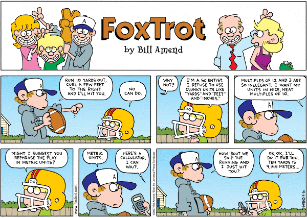

Bill Amend
Jorge Cham (PhD Comics)
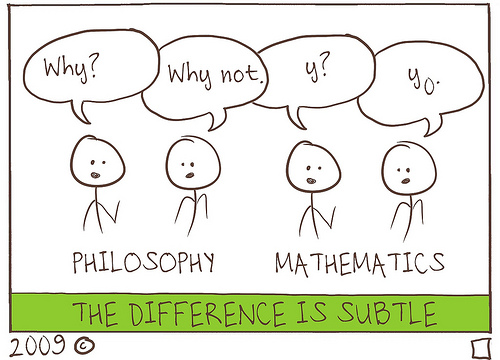
Courtney Gibbons
Robert Leighton

John Lennon/Paul McCartney, loveallthis.tumbir.com
Jef Mallett
Wiley Miller, Non Sequitur


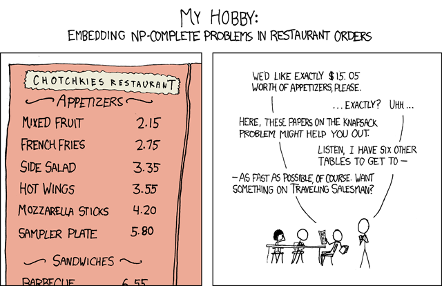


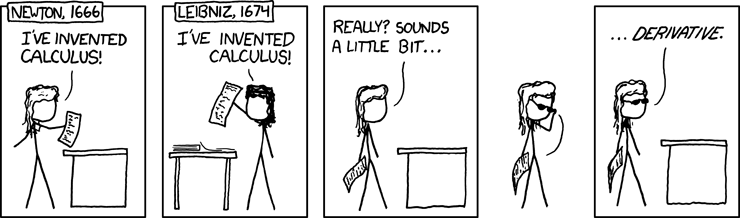
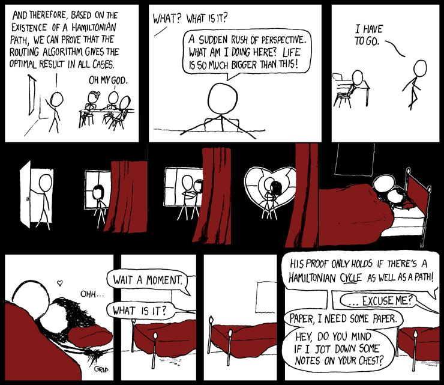


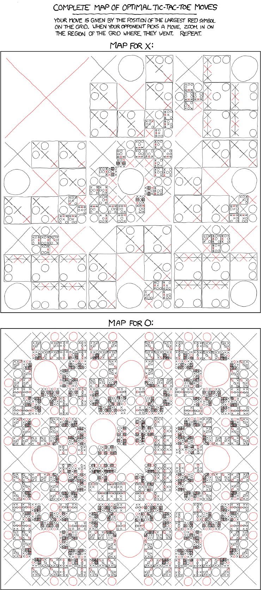


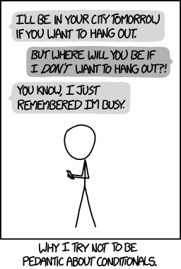


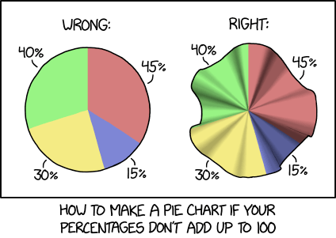
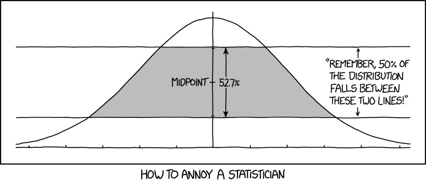


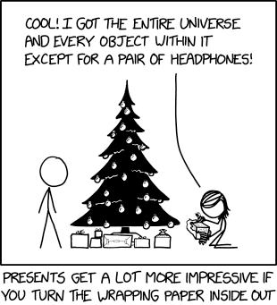
Randall Munroe (xkcd, a webcomic, which "occasionally contains strong language (which may be unsuitable for children), unusual humor (which may be unsuitable for adults), and advanced mathematics (which may be unsuitable for liberal-arts majors)")
Dan Piraro
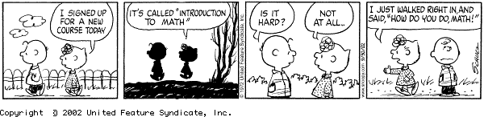


Charles M. Schulz

Spiked Math
Garry Trudeau

Bill Watterson

Zach Weinersmith (Saturday Morning Breakfast Cereal)